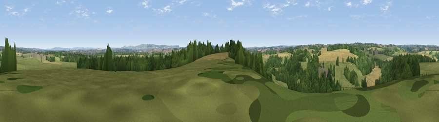

Viewpoint near Wingfield
#28901 in England · top 51% of its area beats it · near Wingfield · path 184 mWhere it is
The exact computed spot (ST 80975 55975). Click the marker for map links.
Public access: the nearest public right of way is about 184 m away — the final stretch may cross private land. Computed from Natural England's CRoW access layer and OpenStreetMap rights of way — not the legal definitive map. Always verify locally.
The view, rendered

A 360° render of this exact spot computed from the terrain model, tree cover and land cover — summer colours, afternoon light, calibrated against photographs of famous viewpoints. Real trees, hedges and buildings will differ in detail.
The panorama
Grey silhouette: terrain skyline in each direction (720 bearings, Earth curvature and refraction included). Dashed green: skyline with trees (+15 m) and buildings (+8 m) as obstacles. Blue strip: how far the ground is visible on each bearing.
Where the view opens
Wedge length = distance to the farthest visible ground on that bearing (vegetation-aware). Rings at 10, 25 and 50 km.
What fills the view
44% grassland · 33% woodland · 22% cropland · 2% built-up
Angular shares of the visible panorama (visual magnitude), not map area. Landscape diversity 0.49 (0–1 Shannon).
Key numbers
More beautiful places nearby
The staircase of upgrades: each row has a higher view potential than everything closer. Driving times are estimates from straight-line distance, calibrated against real road routing — check an actual route before setting out.
| Place | Direction | Drive | Score |
|---|---|---|---|
| Viewpoint near Farleigh Hungerford | NNW · 2 km | ~6 min | 42.7 |
| Viewpoint near Westwood | N · 4 km | ~9 min | 45.2 |
| Viewpoint near Winsley | N · 5 km | ~10 min | 46.3 |
| Viewpoint near Limpley Stoke | NW · 6 km | ~12 min | 60.8 |
| Viewpoint near Westbury | ESE · 9 km | ~18 min | 71.3 |
| Viewpoint near Bratton | ESE · 10 km | ~19 min | 73.2 |
| Cley Hill | SSE · 11 km | ~22 min | 76.8 |
| Viewpoint near Lamyatt | SW · 25 km | ~40 min | 77.8 |
51.30257, -2.27428 · source: screening · position refined by local search. Computed location — check access rights before visiting.